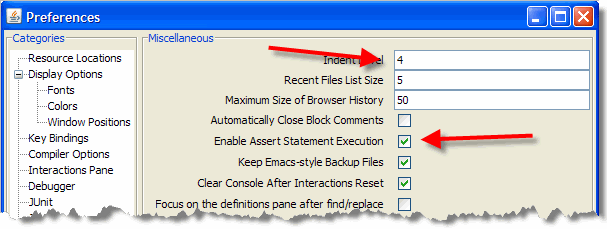
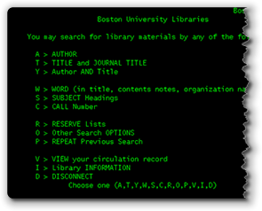
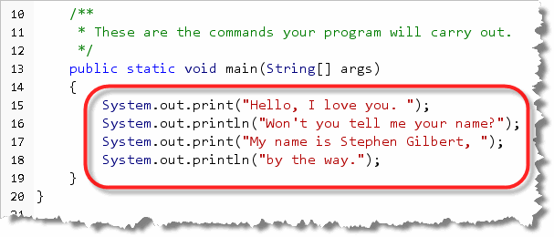
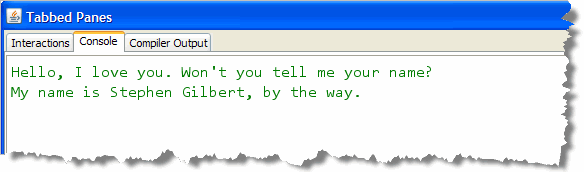
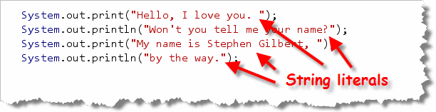
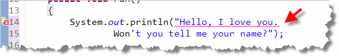
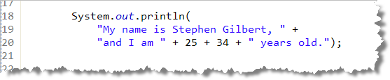
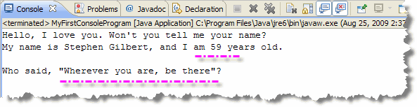

In 1970, a pair of young researchers at
Bell Labs in New Jersey—Ken Thompson and Dennis
Ritchie—developed a portable operating system for a new
generation of mini-computers just coming on the market.
To help simplify the development of Unix, Ritchie created a new
programming language named C (so named because its predecessor was
B).

Both Unix and C have had enormous impact on the field of computing. Many of today's most important language are based on C, including Java, which still uses the original syntax designed by Ritchie.
Ritchie and Thompson jointly received the ACM Turing Award—the
computing profession’s highest honor—in 1983. In 1999,
they jointly received the National Medal of Technology of 1998
from President Bill Clinton for co-inventing the UNIX operating
system and the C programming language, "...which together have
led to enormous advances in computer hardware, software, and
networking systems and stimulated growth of an entire industry,
thereby enhancing American leadership in the Information Age."
In The C Programming Language, Richie offers
this advice on the first page.
The only way to learn a new programming language is by writing programs in it. The first program to write is the same for all languages:
Print the words
hello, world
This is the big hurdle; to leap over it you have to be able to create the program text somewhere, compile it successfully, load it, run it, and find out where the output went. With these mechanical details mastered, everything else is comparatively easy.
That advice was followed by the "hello world" program, which all C programmers learned. While Java is different than C, the underlying advice still holds: your first programs should be as simple as possible to become fluent in the language.
Let's pick up where we left off in the last lesson
by looking at the PrintStream
class which is used for output in traditional console
programs. Then, we'll look at most common type of statement,
the output statement, focusing on those inside the
main() method of MyFirstConsoleProgram.
Traditional Input and Output
Today, most programs use a Graphical User Interface (GUI) and
"widgets" like text-fields, labels, checkboxes and buttons
to communicate with the user, like the Preferences dialog used in DrJava:

In an object-oriented program, those widgets are usually represented by different kinds of objects. Programs haven't always been organized like this, however.Traditional Programs

Instead of being arranged around creating an object and sending it messages, traditional programs, like those you'd write in Pascal, Basic, FORTRAN or C, are arranged around following a sequential set of instructions that produce the desired output.To display output in a traditional language you:
- first find the particular command that your programming
system language uses (like
Writein Pascal,PRINTin BASIC, orprintfin C) - then, you type that command into your source code, along with the information you want the computer to display.
When you run a traditional console program, the computer then "prints" the desired information on your computer's screen, usually in a "text-mode" window.
 In these traditional programs, the console or
terminal acts almost exactly as if you were printing on
an old-fashioned Teletype terminal, the sort that prints on
fan-fold perforated paper, like the one shown in this advertisement.
In these traditional programs, the console or
terminal acts almost exactly as if you were printing on
an old-fashioned Teletype terminal, the sort that prints on
fan-fold perforated paper, like the one shown in this advertisement.
On such a printer, when a line of output is finished, the paper scrolls up to allow the printing mechanism to print on a fresh line. When using this sort of input and output (dubbed "console I/O") on a video monitor, each line of text automatically starts to display on the following line after each line is finished printing.
When a line of output is displayed on the last line of the terminal window, the entire image "scrolls" up to provide a clean line to print the next output. In practice, this looks kind of like a printing teletype terminals, so this scrolling output has been dubbed the "glass teletype."
Java's Glass Teletype Object: System.out
 As I mentioned earlier, Java is an object-oriented language, and, as such, it has no
"commands" for doing input and output at all.
Object-oriented languages are languages that support the bundling
of data and instructions into a single entity—called an
object—and then sending messages to that
object asking it to perform certain operations.
As I mentioned earlier, Java is an object-oriented language, and, as such, it has no
"commands" for doing input and output at all.
Object-oriented languages are languages that support the bundling
of data and instructions into a single entity—called an
object—and then sending messages to that
object asking it to perform certain operations.
Object-oriented programs are organized like a community of objects; each object has various abilities, and each object can interact with the user and with each other somewhat independently.
As luck (and foresight)
would have it, the Java class libraries come complete with a
predefined object that mimics this old-fashioned glass teletype. The name of this
object is out.
That’s right, out. But seeing as it's a traditionalist sort of object, to get it to respond, you'll need to use its fully-qualified name:
To ask the System.out object to carry out an
action, you need to call one of its methods.
Its two most important methods (at least to us) are print
and println, both of which
are used in your MyFirstConsoleProgram:

print and println
These two methods are used to display output on the system
console. To use either print or
println, you type the information that you
want to be printed inside parentheses, following the
method name. This is called passing the method an argument.
The information can be a number, like
3 or 5.7, or it can be text (provided you put double-quotes
around the text, like we've done in our program).
The argument that you pass is converted to a "human-readable"
text format, called a String, and then displayed on the program's
console window by the System.out object.
As you can see, print is called on lines 15 and 17, while
println is called on lines 16 and 18.
The difference between print and println,
(usually pronounced print-line),
is that println adds a newline to the
end of its output, so that the next time you use
print or println, the new output
appears on the following line.

Note that the output produced by line 16 appears on
the same line, but following the output from line
15, while the output on line 17 starts on a completely
new line, since line 16 uses println,
which adds a newline after printing its argument:
You can also call
println() with no arguments, if you just want to
add a "blank" line on the console.
The System Console Window
When you use the Java's standard console object, instead of using a graphical console window, both input an output appear inside your operating system's console window, or the window that your IDE uses for console input and output.
Your operating system's console is the command shell or terminal window
that you used to start the program from the command line. Here's what that
looks like in Windows, using the Windows shell:
 In DrJava, the standard operating system input and ouput appears in a special console
pane that appears below the definitions pane. If you like, you can "detach"
all of the "tabbed panes" into their own, free-standing window, by using
the Tabbed Panes option on the Edit menu.
In DrJava, the standard operating system input and ouput appears in a special console
pane that appears below the definitions pane. If you like, you can "detach"
all of the "tabbed panes" into their own, free-standing window, by using
the Tabbed Panes option on the Edit menu.

Introducing Strings
Java has two data types that
represent human-readable text:
the char built-in type, for individual characters, and the
String standard library class for phrases, sentences, and paragraphs.

A string is a sequence of characters, like those in this sentence. In Java, the sequence can include any number of characters, including 0.
char type later in the
text. I'll also put off many of the details of the String
class until a later lesson. Because we'll be using strings in these
first few lessons, though, we'll cover the basics here.
String Literals
String literals are formed using regular
characters, enclosed in double quotes, like the arguments passed
to the println() method in your console program:

You can initialize a String variable using a literal,
just form your String using regular characters,
and enclose the whole thing in double quotes, like this:
String greeting = "G'day Mate!";
Because Strings are actually objects,
you can also use a String constructor, like:
String anotherGreeting = new String("Aloha!");
The null String and the Empty String
A String variable that points to "nothing" is
called the null String. You cannot send
any messages to a null String or apply
any operations to a null String, except
for the assignment operator.
Here is a variable definition that illustrates the null
String:
String s1; // Not initialized; value is null
System.out.println(s1); // Java won't compile your code
A null String does not refer to anything.
The empty String, in contrast, refers to
a valid String object, one that contains zero
characters. Unlike the null String, the
empty String responds to messages and may be used
in String expressions.
To create an empty String you use a pair of
adjacent double-quotes with no intervening spaces like this:
String emptyString = "";
String Concatenation
When used with Strings, the plus sign (+) acts to
"paste" two Strings together to form a new
String, a process called concatenation.
This can be useful when you want to print a very long
String that won't fit inside the code window
without scrolling, like this example, (which won't compile
as it is):

To get this to work, you just create twoString
literals, and combine them into one with the concatenation
operator like this: When you do this, make sure that you leave a space
character separating the words when they're recombined, like I've
done here following the period in the first sentence.
When you do this, make sure that you leave a space
character separating the words when they're recombined, like I've
done here following the period in the first sentence.
Numbers and Concatenation
You can also use the plus-sign to "paste together" numbers
and String values. When you do this, Java
automatically converts the number type to a String
so that the number can be displayed.
Here's an example that combines a number (my age) with a
pair of String literals:
 Note that the number does not have quotes around it.
Sometimes, this automatic conversion interferes with what
you really want to do, however. If you were to write this:
Note that the number does not have quotes around it.
Sometimes, this automatic conversion interferes with what
you really want to do, however. If you were to write this:

you might expect to see my age printed out as before. Instead, however, you'll see "I am 2534 years old" printed on your display, which is really not correct, no matter how gray my hair. When you use the plus-sign in this way, you'll need to use
parenthesis to let Java know you want to add the two
numbers, while concatenating the Strings,
like this:

Escape Sequences
Suppose that you want to put quotes-marks around this
famous, (yet anonymous) quotation. You might try this:
 Unfortunately, this won't compile, because Java treats
the first quote that appears inside your string as the
end of the string itself. Java has a solution.
Unfortunately, this won't compile, because Java treats
the first quote that appears inside your string as the
end of the string itself. Java has a solution.
An escape sequence is a method of writing "difficult"
characters, that is, characters that are invisible or that
are used, normally to delimit other characters.
The first part of an escape sequence is to designate one
character as the "escape character". When that character
is encountered—in a character literal or in a group of
characters, called a String—the compiler treats
it as a flag that means:
"Look out! The next character is special."
In Java, the escape character is the backslash. Whenever a backslash appears in a character constant, the following character is set aside for special treatment.
Java maintains "special notation" for several of the common control characters, as escape sequences. These include:
| \n | The newline character (Unicode 10) |
|---|---|
| \r | The carriage-return (ENTER) (Unicode 13) |
| \t | The horizontal tab character (Unicode 9) |
| \f | The form-feed character (Unicode 12) |
| \b | The backspace character (Unicode 8) |
| \' | The single quote |
| \" | The double quote |
| \\ | The backslash itself |
With this information, you can see that you could write your
inspirational quote like this:

Here's the output, both from embedding a pair of quotes using
escape sequences, and using concatenation to combine a number
with a String:
